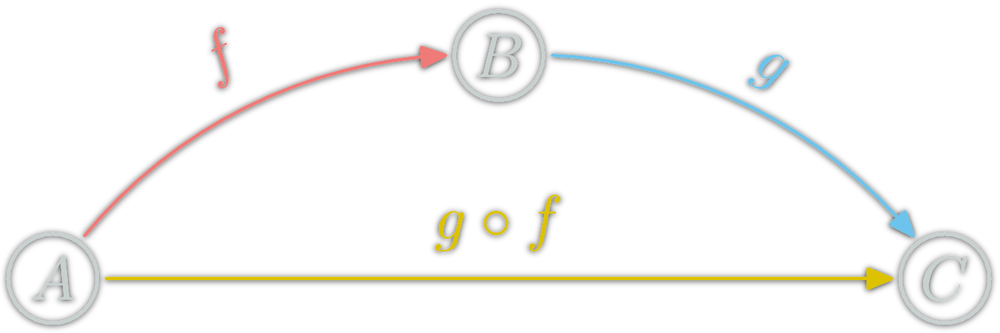
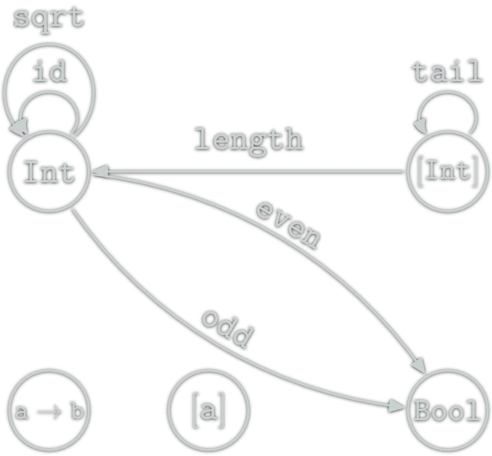
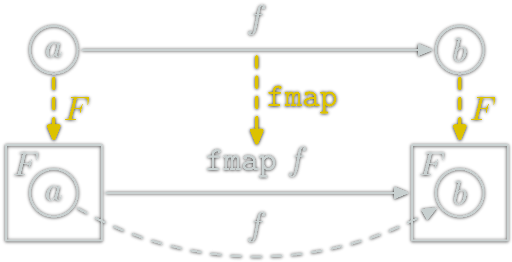
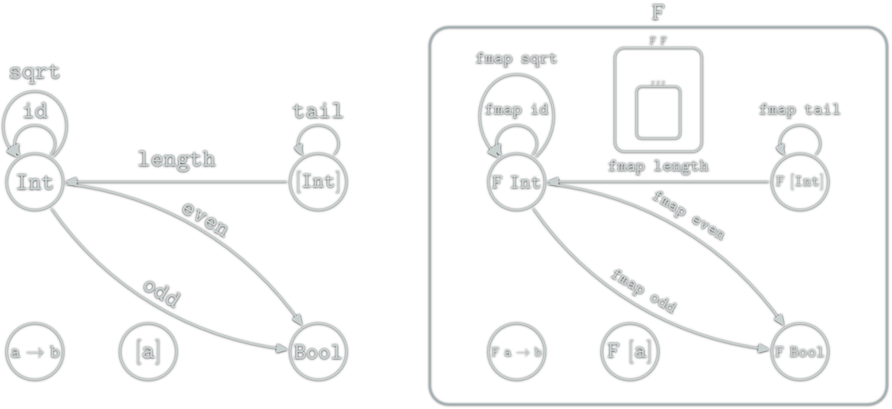
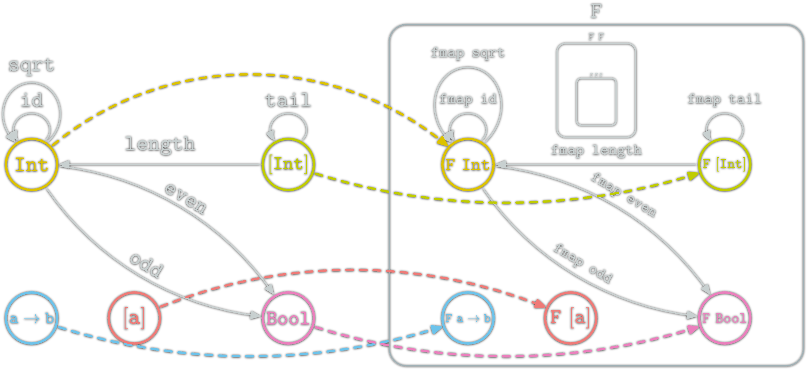

Example In Haskell:
fold generalisationA common concept you see in multiple instances.
Numbers: 1,2,3,... 3400 BC, real numbers 760 BC


& More things can be understood as numbers
& More ways to manipulate them.
| Numbers | Set Theory (∞)/Abstract Algebra/Topology |
|---|---|
| \(\mathbb{N}\): \((+,0)\) | Semigroups |
| \(\mathbb{Z}\): \((+,0,\times,1)\) | Rings |
| \(\mathbb{Q}\) | Fields |
| \(\mathbb{R}\) | Complete Fields (topology) |
| \(\mathbb{C}\) | Algebræ |
| Modules,Vector Spaces, Monoids, ... |
& More general: more things are sets.
& More precise: clear distinction between concepts.
| Numbers | Sets | Categories |
|---|---|---|
| \(\mathbb{N}\): \((+,0)\) | Semigroups | |
| \(\mathbb{Z}\): \((+,0,\times,1)\) | Rings | |
| \(\mathbb{Q}\) | Fields | |
| \(\mathbb{R}\) | Complete Fields (topology) | |
| \(\mathbb{C}\) | Algebræ | |
| Modules,Vector Spaces, Monoids, ... |
& More general: more things are categories.
& More abstract: generalization for free; replace = by ≅.
& Homogeneous vocabulary.
Categories package entire mathematical theories.
& More general: more things are Categories.
& More precise: better distinction between concepts.
Young field: 1942–45, Samuel Eilenberg & Saunders Mac Lane
Natural Abstractions: pointers, variables, loop, Objects, Classes...
Representation: a data structure changing other time.
Natural abstraction: higher level functions & equations
4 + ["foo",27] forbidden
["foo",27] forbidden
data Maybe a = Just a | Nothing
[Just 32,Nothing,Just 12] :: [Maybe Integer]
Natural abstraction: Polymorphic higher level functions.
mappend (<>) "abcdef" <> "ABCDEF" = "abcdefABCDEF" -- String
("ab","xy") <> ("AB","XY") = ("abAB","xyXY") -- (String,String)
3 <> 4 ⇒ ERROR which law? + or * -- Int
-- Use a type to remove ambiguity
type Sum = Sum {getSum :: a} -- Just a named box
-- Monoid (Int,+,0)
(<>+) = getSum (Sum x <> Sum y)
3 <>+ 4 = 7
-- Monoid (Int,*,0)
type Product = Product {getProduct :: a} -- Just a named box
(<>*) = getProduct (Product x <> Product y)
3 <>* 4 = 12Note: with Monoids (M,⊙,e); foldl ⊙ e ms = foldr ⊙ e ms
(>>=)Example: (>>=) with [a] and Maybe a
data Maybe a = Just a | Nothing-- Maybe Int >>= Int -> Maybe (Int -> Int) >>= (Int -> Int) -> Maybe Int
(Just 2) >>= \x -> (Just (\z->z*z)) >>= \f -> Just (f x) = Just 4
Nothing >>= \x -> (Just (\z->z*z)) >>= \f -> Just (f x) = Nothing
-- [Int] >>= Int -> [Int -> Int] >>= (Int -> Int) -> [Int]
[1,2] >>= \x -> [(+10),(+20)] >>= \f -> [f x] = [11,21,12,22]
[] >>= \x -> [(+10),(+20)] >>= \f -> [f x] = []| Impure | Choose the data structure, find an algorithm. |
| Untyped Pure | Choose the data structure, find an equation. |
| Typed Pure | Choose the Types and their laws, find the right operator |
A way of representing things and ways to go between things.
A Category \(\mathcal{C}\) is defined by:

\(\ob{\mathcal{C}}\) is a collection

\(\hom{A,B}\) is a collection
Composition (∘): \(f:A→B, g:B→C\) $$g∘f:A\rightarrow C$$
for each object \(X\), there is an \(\id_X\), s.t. for all \(f:A→B\):

Composition is associative:
Two path with the same source and destination are equal.


\(\ob{\C},\hom{\C}\) fixed, is there a valid ∘?


(.) )(++) "" ++ u = u = u ++ "" (u ++ v) ++ w = u ++ (v ++ w) each Monoid \((M,e,⊙): \ob{M}=\{∙\},\hom{M}=M,\circ = ⊙\)
one object
Examples: (Integer,0,+), (Integer,1,*), (Strings,"",++), (Lists,[],++), ...
each preorder \((P,≤): \ob{P}={P},\hom{x,y}=\{{x≤y}\} ⇔ x≤y,f_{y,z} \circ f_{x,y} = f_{x,z} \)
At most one morphism between two objects.Any set \(E: \ob{E}=E, \hom{x,y}=\{x\} ⇔ x=y \)
Only identities ; not so interesting
Any property which can be expressed in term of category, objects, morphism and composition
A functor is a mapping between two categories. Let \(\C\) and \(\D\) be two categories. A functor \(\F\) from \(\C\) to \(\D\):


An endofunctor for \(\C\) is a functor \(F:\C→\C\).
Categories and functors form a category: \(\Cat\)
Category \(\Hask\):
(.) Haskell function composition
Forget glitches because of undefined.
In Haskell some types can take type variable. Typically: [a].
data Tree a = Node a [Tree a]
data CTree a b = CNode a [b]Types have kind; The kind is to type what type is to function. Kind are the "type" for some types (so meta).
Int, Char :: *
[], Maybe, Tree :: * -> *
CTree :: * -> * -> *
[Int], Maybe Char, Tree [Int] :: *We can make function that can work for all type parameter. Such function can only work with the topology induced by the type. We know such function won't work on the elements.
Sometimes, the type determine a lot about the function:
fst :: (a,b) -> a -- Only one choice
snd :: (a,b) -> b -- Only one choice
f :: a -> [a] -- Many choices
-- Possibilities: f x=[], or [x], or [x,x] or [x,...,x]
? :: [a] -> [a] -- Many choices
-- can only duplicate/remove/reorder elements
-- for example: the type of addOne isn't [a] -> [a]
addOne l = map (+1) lFunctor for Haskell language is a type F :: * -> * which belong to the type class Functor.
It must implement fmap :: (a -> b) -> (F a -> F b).
& F: \(\ob{\Hask}→\ob{\Hask}\)
& fmap: \(\hom{\Hask}→\hom{\Hask}\)
The couple (F,fmap) is a functor in the categorical sense for \(\Hask\) if for any x :: F a:
fmap id x = x
fmap (f.g) x= (fmap f . fmap g) x
data Maybe a = Just a | Nothing
instance Functor Maybe where
fmap :: (a -> b) -> (Maybe a -> Maybe b)
fmap f (Just a) = f a
fmap f Nothing = Nothing
fmap (+1) (Just 1) == 2
fmap (+1) Nothing == Nothing
fmap head (Just [1,2,3]) == Just 1
instance Functor ([]) where
fmap :: (a -> b) -> [a] -> [b]
fmap = map
fmap (+1) [1,2,3] == [2,3,4]
fmap (+1) [] == []
fmap head [[1,2,3],[4,5,6]] == [1,4]
data F a = Cons Char a | Nil
-- examples :
-- Cons 'c' 32 :: F Int
-- Cons 'c' (\x -> x*x) :: F (Int -> Int)
-- Cons 'c' (Cons 'a' (\x -> x*x)) :: F (F (Int -> Int))
-- Cons 'c' (Cons 'c' Nil) :: F (F (F))
-- note String is the fixed point of F: F(F(F(...)))
instance Functor F where
fmap :: (a -> b) -> [a] -> [b]
fmap f (Cons c x) = Cons c (f x)
fmap f Nil = Nil
fmap (+1) (Cons 'c' 3) == Cons 'c' 4
fmap (+1) Nil == Nil
fmap head (Cons 'c' [1,2,3])== Cons 'c' 1
Put normal function inside a container. Ex: list, trees...

Haskell Functors are:
Haskell functor can be seen as boxes containing all Haskell types and functions. Haskell types is fractal:
Haskell functor can be seen as boxes containing all Haskell types and functions. Haskell types is fractal:
Haskell functor can be seen as boxes containing all Haskell types and functions. Haskell types is fractal:
A simple basic example is the \(id_\Hask\) functor. It simply cannot be expressed as a couple (F,fmap) where
F::* -> *fmap :: (a -> b) -> (F a) -> (F b)Another example:
T)=Intf)=\_->0length can be seen as a Functor from the category [a] to Int. More precisely:
⇒
length [] = 0
length (l ++ l') = (length l) + (length l')
All endofunctors of \(\C\) form the category \(\E_\C\) of endofunctors of \(\C\).
F a -> G a are the natural transformations.A Monad is just a monoid in the category of endofunctors, what's the problem?
All told, a monad in X is just a monoid in the category of endofunctors of X, with product × replaced by composition of endofunctors and unit set by the identity endofunctor.
A monoid is a triplet \((E,∙,e)\) s.t.
Satisfying
A Monad is a triplet \((M,⊙,η)\) s.t.
Satisfying
Example: Maybe is a functor
-- In Haskell ⊙ is "join" in "Control.Monad"
join :: Maybe (Maybe a) -> Maybe a
join (Just (Just x)) = Just x
join _ = Nothing
-- In Haskell the "return" function (unfortunate name)
η :: a -> Maybe a
η x = Just xExample: Maybe is a functor (join is ⊙)
join (Just (join (Just (Just x)))) = join (join (Just (Just (Just x))))
join (Just (join (Just Nothing))) = join (join (Just (Just Nothing)))
join (Just (join Nothing)) = join (join (Just Nothing))
join Nothing = join (join Nothing)
join (η (Just x)) = Just x = Just (η x)
join (η Nothing) = Nothing = NothingAnd (Maybe,join,η) is a monad.
Example with lists:
f=\x->[x] ⇒ f 1 = [1] ⇒ (f.f) 1 = [[1]]
g=\x->[x+1] ⇒ g 1 = [2] ⇒ (g.g) 1 = ERROR [2]+1
h=\x->[x+1,x*10] ⇒ h 1 = [2,10] ⇒ (h.h) 1 = ERROR [2,10]+1How to fix that? Kleisli composition
f <=< g = \x -> join ((fmap f) (g x))
f=\x->[x] ⇒ f 1 = [1] ⇒ (f <=< f) 1 = [1]
g=\x->[x+1] ⇒ g 1 = [2] ⇒ (g <=< g) 1 = [3]
h=\x->[x+1,x*10] ⇒ h 1 = [2,10] ⇒ (h <=< h) 1 = [3,20,11,100]A monad can also hide computation details (ex: a common parameter).
DrawScene to State Screen DrawScene ; still pure.
main = drawImage (width,height)
drawImage :: Screen -> DrawScene
drawImage screen =
drawPoint p screen
drawCircle c screen
drawRectangle r screen
drawPoint point screen = ...
drawCircle circle screen = ...
drawRectangle rectangle screen = ...main = do
put (Screen 1024 768)
drawImage
drawImage :: State Screen DrawScene
drawImage = do
drawPoint p
drawCircle c
drawRectangle r
drawPoint :: Point -> State Screen DrawScene
drawPoint p = do
Screensize width height <- get
.../
#